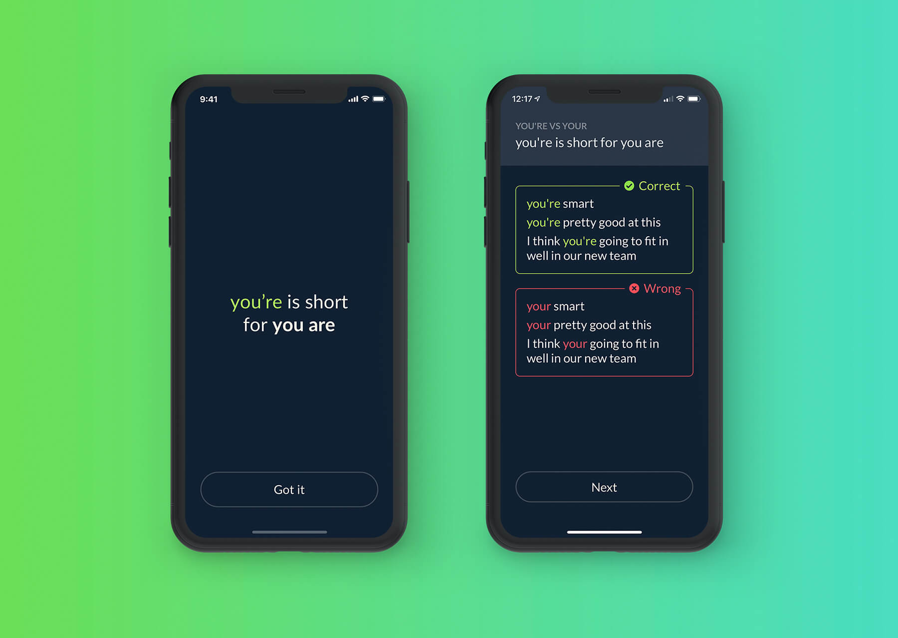
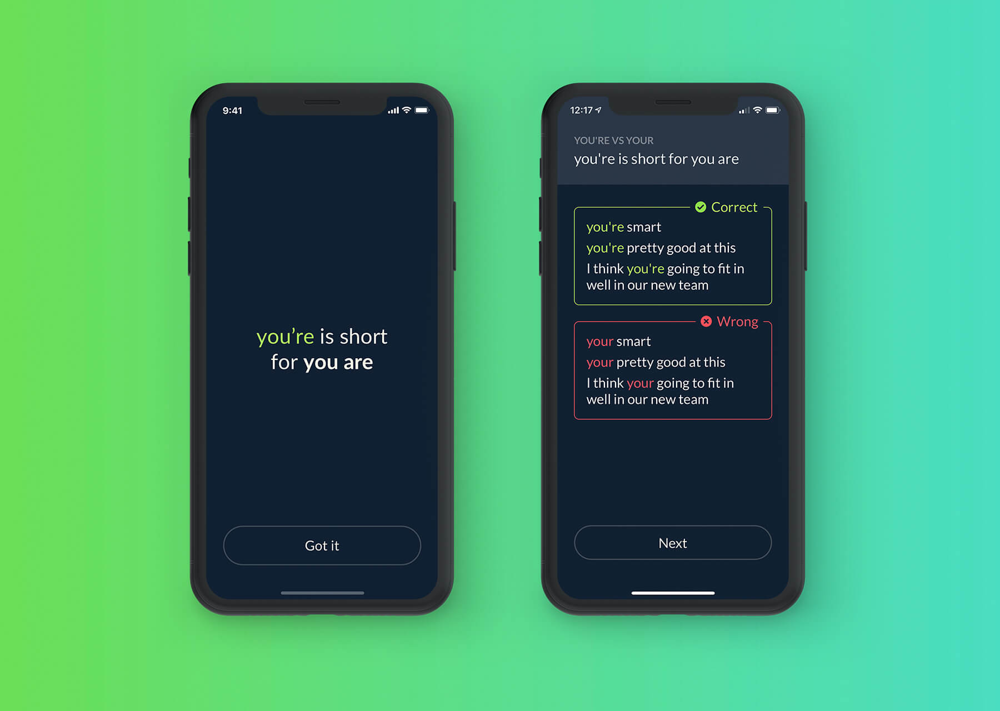

Thrive App
Thrive is an iOS productivity app that I designed, tested and developed as a side project over ~5 months, and I want to share some of the lessons I learned going through the entire product design process from idea to launch.
Thrive is an iOS productivity app that I designed, tested and developed as a side project over ~5 months, and I want to share some of the lessons I learned going through the entire product design process from idea to launch.
I’ve been thinking of ways to improve my productivity for many years so the core ideas of this app are the culmination of the lessons I learned and the project started with me trying to solve some of my own problems.
I started with some sketches and documents describing the concepts as well as some basic wireframes. I wanted to explain the concept to a few friends and colleagues so I can gather feedback early and make sure that the design I’d create later would be as accessible and easy to understand as possible.


Once I confirmed that the app I had in mind would be useful to others too, I started shaping the design and I kept validating it with the people I knew who saw value in the proposition and were happy to provide feedback.
I got a lot of valuable ideas, such as adding a list of examples of things to try when stuck or adding a time estimate for each goal, but I also got useful insights into how others think, how they organise their goals and what an app like this would need to do to be truly useful for them.
The design went through several itterations and I created prototypes that I would then test.


I will do my best to explain how the design works, but you can also try the app for yourself (ask me for a promo code).
It starts with an onboarding that tells the user what to expect, walks them through the key features and then asks for preferences for things like using iCloud sync or weekly notifications.
The onboarding has been through several revisions because I understand how crucial it is to prepare users for the experience and help them understand what they can do with the app rather than just throwing them into an empty screen and expecting them to figure it out.
From there, the app is split into 3 major sections:
Like the promo video says, we all sometimes think of ambitious goals that we then never do anything about, and Thrive tries to solve this with a relatively simple mechanism: asking users to stop and think about the steps needed to get closer to each goal.
The challenge was designing an experience that achieves this without feeling heavy-handed and that actually helps people get unstuck, so the app asks that you stop and think for 2 minutes (this can be skipped, which is one of the lessons from the testing sessions) and provides plenty of examples to help get the thinking going.
Thrive will then show a list of all goals and how close to achieving them a user is.
I wanted the app to provide a great experience so I’ve created designs for the empty states too and made sure users never feel lost or confused.
The app also has a focus function meant to help beat procrastination. Once started, there’s no way to cancel this, even if the app is quit (only the app is locked though, users can still leave Thrive and use their device).
This is perhaps the simplest section and it’s meant for jotting down quick thoughts throughout the day. I did want to add some extra value here so I thought of showing stats for how many ideas a user logged in total and whether they had some periods when they were more active.
The decisions section is what I am most proud of and I think it’s a great example for how visualising difficult concepts in a clean interface can cut through the noise and make them simple.
The way it works is that it will ask the user to first list all the options they are trying to decide between, then think of the parts of their lives the decision would impact (e.g. personal time, happiness, opportunities to develop) and finally rate each factor for each decision on a scale of 1 - 10 (e.g. if I take this job, my personal time will be 3 but my opportunities to grow and happiness will be 8).
The app will then visualise the options as stacked bar charts and hopefully provide some clarity and context to the user. It also offers a few tips and thought exercises in case anyone is still having difficulty deciding at this point.
The design continued to evolve alongside the coded version of the app, which let me refine interactions, design states I missed and create a consistent experience that fits well together.
From a visual standpoint, I knew early on it would be important to colour code the different types of information you can organise with Thrive so that users can organise them better in their minds. I also wanted to use vibrant colours and engaging animations to help users feel hopeful about what they can achieve with this app.
I’ve only been learning to code for about 1.5 years in my spare time so I’m by no means an experienced developer. But, working on Thrive has been a great learning experience and it expanded my understanding of the Swift language and the iOS platform.
I started using extensions to keep my view controllers manageable, learned of a new way of iterating through arrays, discovered some great new libraries and learned the importance of using different branches in GitHub. I also learned the hard way to safely unwrap optionals when the weather API the app uses reached its limit on the free plan because of all the traffic and the app started crashing on launch because of a forcefully unwrapped optional.
The app isn’t open source but I'd be happy to share the project.
Publishing the app on the App Store was relatively easy since I already had some experience with what Apple’s review team looks for and what I can and can’t do with things like screenshots and the description.
Launching on Product Hunt required some thinking: I picked Saturday, the least busy day, and asked all my friends to upvote it so it goes out of the bottom section. The PH algorithm looks at activity, not just upvotes so I made sure to reply to everyone who left a comment and save the feedback they shared in FeedBear. I believe having a video helped too.
The app made it to #1 on PH pretty quickly and remained there for the rest of the day, earning it the badge.

I wanted the website to start with a strong proposition - this app can help you get your life together, and make this as appealing as possible (hence the discount and the video).
Below the fold, I wanted to tell the story of the app, to take users on a journey through all the things the app can do and how this will benefit them.
The site also answers common questions and has a media kit which I’ve used when approaching blogs and journalists for writing about the app.
I monitored performance with GA and FullStory. Conversion rate before the app was featured reached 14% (2.1k visits vs 307 sales). The app now has 4.6k visits to the site and 2.3k units sold, but a lot of sales are coming from the App Store feature directly so I’ll need to think of an accurate way to calculate conversion after the feature.
You can check out the site here and the code is open source if you’d like to have a look.
The promo video was one of the most important parts of the app's presentation because it explains the concept in just over 1 minute and is a great alternative for visitors who don’t want to read the website.
I’m no motion designer so I used a few templates to make it, but I did write the script and created the storyboard and in the end the video was well-received not only because it explains the app pretty easily, but also because it helps cement its identity and gives it a bit of personality.
Apple approached me about the possibility of featuring both Thrive and Grammar Fix in the US and 12 other countries and asked for graphics for the feature. They suggest creating multiple versions so I thought I’d try to create several styles and give them plenty of options to choose from and increase my chances.
It worked and Apple decided to feature the app under ‘New apps we love’ and under ‘Try something new’. It quickly climbed to #2 in the Productivity category (my guess is that the sorting algorithm looks at sales over time because it didn’t stay there for long).
I wanted a good way to not just keep track of all the feedback I receive but also to signal to users that I am listening and open to feedback so I signed up for FeedBear and linked it on the website. I was impressed with how well this model worked for companies like Adobe with UserVoice and I wanted something similar.
I got some valuable feedback through this channel, but I’d say the biggest benefit was being able to keep users in the loop about the status of a certain feature, ask for more details, etc.


The app has been very well received with people going out of their way to write positive reviews and write me about how much it helped them or suggesting ideas and content. So far it sold 3.8k units.


Please note that most of these reviews are from the US store, where the app received the majority of its sales, so you’ll have to switch to that store to see them.
I did make a rookie mistake when developing the app that ended up causing the app to crash on launch for several hours and by the time I fixed this it was too late. While most people just emailed me and were understanding, 4 people left 1* reviews. It was important to get the rating back above 4* while the app was still featured so I messaged every American I knew to ask them to leave a review (which worked) and tried to reply to all the customers who left 1* reviews and explain that the issue has been fixed (which didn’t work). The crash was caused by the weather API still being on the free plan and unable to cope with all the traffic + the fact that I didn’t account for this possibility safely in my code. I upgraded the plan to an unlimited one and pushed an update to make sure even if the API does this again somehow, the app won’t crash again.
With this being a side project, I’ve had to prioritise features carefully. I’m using FeedBear to make it clear to users that I am listening to their suggestions and ideas and I’m also using it as a central hub for feedback I receive via other channels.
Version 1.1 brought minor bug fixes, while version 1.2 included the top most requested features at the time: iCloud sync and the ability to re-order steps.
For future versions, I’m considering adding the option for FaceID / TouchID protection as well as localising the app to Chinese. I noticed China is already the second biggest market (still way behind the US) and localising it could be an easy way to bring a potential boost in sales.
Before working on Thrive, I had the idea for an app that would help people understand and avoid the most common grammar mistakes, but in a way that’s friendly and approachable (as opposed to picking up a dictionary or a grammar manual). This app is called Grammar Fix and it was also featured alongside Thrive.
You can get it here.
 


Being completely free, this app has 13.9k downloads at the time of writing and 430 ratings with an average rating of 4.8
The first app I ever published is a pretty simple one from a technical standpoint and something that started as a personal project back in 2016 - an attempt to demystify what emotions are and how they work via simple and concise definitions.
If I asked you what frustration, curiosity, or trust are, you would likely know the meaning of the words but couldn’t easily define each emotion. I think having a clear and concise definition for each emotion is a good step towards better emotional intelligence.
You can get it here.


Emotions Dictionary wasn’t nearly as popular, but I think it is nevertheless an important milestone and the lessons learned making it served me well in later projects.
Return Home